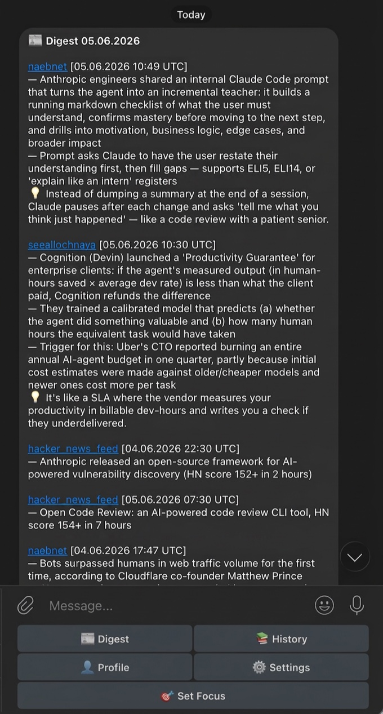
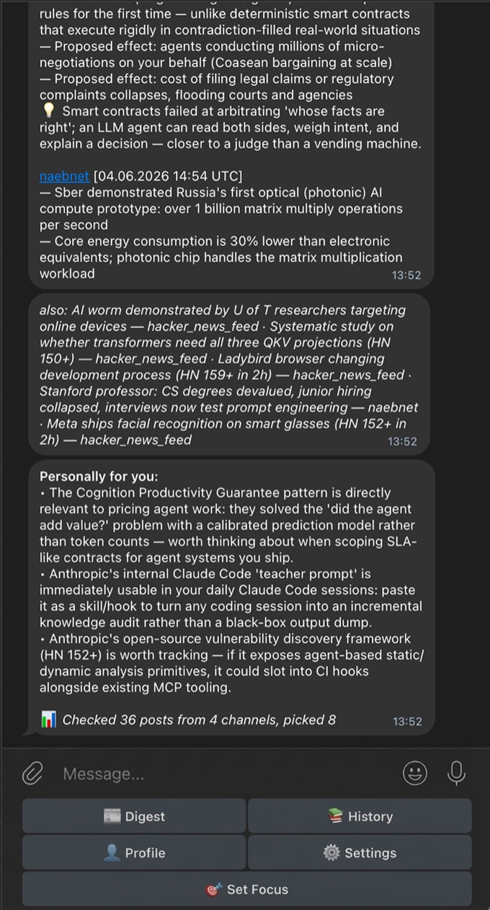

Follow 10–15 Telegram channels without the 30-minute scroll. Digest reads them for you and boils the day into one morning read, tuned to what you care about: the substance inline, not a list of links to chase. Want more on something? Ask it.


I follow more channels than I can read. Most days I skim, miss what mattered, and still lose half an hour scrolling. I wanted the opposite: one read in the morning — the real substance of everything worth knowing — and done.
The naive version — paste the posts together, ask an LLM to summarize — produces a bland wall nobody reads: dominated by whichever channel posted most, padded with ads, blind to the article sitting behind a link. Each of those is a separate piece of plumbing to fix, and that plumbing is most of what the project actually is.
A deterministic pipeline, not an agent. Each post is screened by a cheap model for ads; links worth opening are fetched and read down to the article text; posts are selected with per-source fairness so no single channel dominates; then one stronger model writes the digest, tuned to your profile. Every stage has an explicit model and token budget, and the whole path is offline-testable — no agent framework on the thing that has to run reliably every single day.
A cheap triage call decides which links are worth opening; then a fixed fetch → resolve-one-hop → extract pipeline pulls the actual article text. A channel that only posts headlines and links becomes real content in the digest, not a teaser you have to chase.
Per-source fairness and tiering in the picker, so one high-volume channel can't monopolize the digest. A bounded set of body items plus a compressed tail — enough to feel complete without becoming the wall it was trying to replace.
The digest carries the facts inline plus a short "what this means for you" — you read the message and you're done. No teaser that funnels you to a website, no list of links to tap through. The message is the product.
On top of the daily digest sits a stateful conversational agent (deepagents / LangGraph): ask "more on this" or "what did I miss last week?" and it answers from your digest history, with conversation state checkpointed to Supabase so the thread survives a restart.
A per-stage model registry: cheap models for ad-filter and triage, a stronger one only for the final write, each with explicit token caps and structured cost logging. Clean dependency injection keeps the deterministic path offline-testable end to end.
Most of the decisions that make a digest worth opening happen before the summary call ever runs:
A generic roundup gets skimmed once and abandoned. Pulling facts inline, adding a so-what, and cutting the tap-out turns it into something read daily — the single biggest lever on whether it actually gets opened each morning.
Raw recency lets a firehose channel eat the whole digest. Per-source fairness and tiering cap any one source's share, so a quiet channel's one good post still surfaces.
Aggregator channels post a line and a link. A bounded fetch-and-extract reads the article behind it, so those posts contribute substance instead of a headline the reader still has to go open.
A cheap binary ad-classifier runs before anything expensive, and its verdict is cached per post — so ad screening costs almost nothing and the same post is never paid for twice.
Spend follows attention, not habit: the strong model writes; everything upstream runs on cheap models with hard token caps. Cost is logged per stage, so a regression is visible the next day, not at the end of the month.
Live and self-hosted, delivering a digest every day. Built solo end-to-end, and it's the thing I actually open in the morning instead of the channels.
A digest lives or dies on the unglamorous parts around the summary: a reader that opens the link instead of quoting the headline, a picker that won't let one loud channel bury the rest, an ad filter that runs before anything costs money, and an output you finish inside the message instead of tapping through. Get those right and it gets opened again tomorrow — for something daily, the only test that counts.
Open source under AGPL-3.0. Source on GitHub.